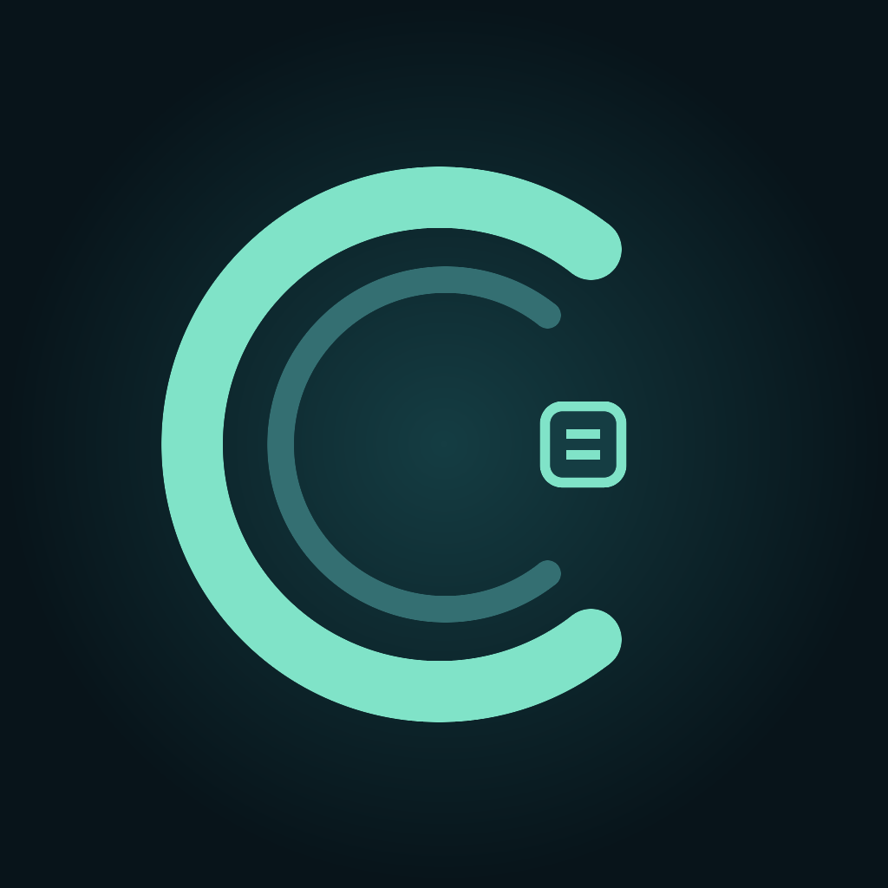

Bring your own ABI.
Paste ABI JSON or choose a file. Save local ABIs, review their functions, and select the right one for each call.

CaldrixaDecode calldata against an ABI you provide. Compare two calls, inspect exact parameter values, and keep a clear record of what changed.
No wallet connection. No transaction submission. No chain lookup.
From raw hexadecimal input to a readable record, Caldrixa keeps the supplied evidence and its interpretation together.
Paste ABI JSON or choose a file. Save local ABIs, review their functions, and select the right one for each call.
Match the selector against your ABI and inspect supported parameters by name, type, and exact decoded value.
Compare two calls using the same ABI. Review changed fields, then copy, save, or share a text or JSON report.
Start with the built-in fictional example or provide your own ABI and calldata. Caldrixa never needs a wallet or a network request to show the decoded result.
Read the input guideUse a saved ABI, import JSON, or try the included example.
Provide a complete 0x-prefixed hexadecimal call.
Review the result and export a report when you need to share it.
Caldrixa shows how supplied calldata maps to a supplied ABI. It does not check contract code or state, predict execution, or judge whether a transaction is safe. Encoded amounts should be interpreted with the relevant token decimals.
Input formats, common decode errors, privacy details, and a way to reach support are one step away.